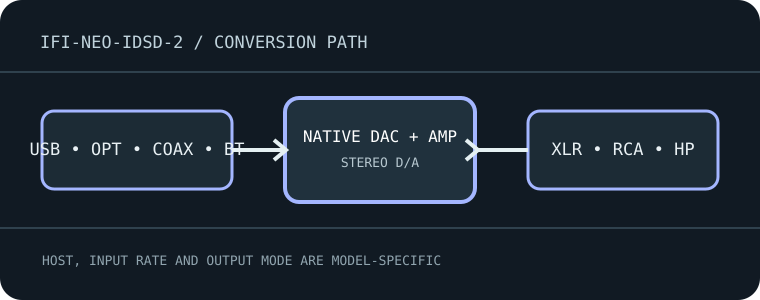

[ INDIVIDUAL MODEL // SOUND HARDWARE ]
iFi NEO iDSD 2
Desktop DAC, preamplifier and headphone amplifier with USB, optical/coaxial S/PDIF and Bluetooth input.

Model-specific specifications
| Exact model / architecture | Burr-Brown True Native digital conversion with balanced analog and headphone stages; configurable as a DAC/preamp/headphone amp, not a multichannel recording interface. |
|---|---|
| Digital inputs / interface | USB-B computer audio, optical TOSLINK and coaxial S/PDIF, plus Bluetooth 5.4 with codec availability negotiated by the transmitter. |
| Analog / digital outputs | Balanced XLR and unbalanced RCA analog line outputs; front 4.4 mm balanced and 6.3 mm single-ended headphone outputs. Digital coax output is supported in specified operating modes. |
| Supported formats and rates | USB formats reach PCM 768 kHz, DXD and DSD512 per iFi documentation; optical/coax and Bluetooth have lower path-specific limits. MQA and codec support depend on input, firmware and host/player mode; consult manual tables before selecting a rate. |
| Power | External DC adapter supplied; use the voltage, polarity and current rating stated for NEO iDSD 2 rather than substituting a generic adapter. |
| Drivers / host compatibility | Computer USB audio on supported Windows/macOS systems; install the current iFi driver on Windows for extended high-rate playback. Mobile USB needs a compatible OTG/host adapter; Bluetooth pairing and codec negotiation are host-dependent. |
| Compatibility caveats | Check output mode and volume before connecting powered speakers or a power amplifier. Headphone sockets and line outputs differ electrically; high-resolution USB capability does not apply to optical or Bluetooth inputs. |
Compatibility & preservation
Check output mode and volume before connecting powered speakers or a power amplifier. Headphone sockets and line outputs differ electrically; high-resolution USB capability does not apply to optical or Bluetooth inputs.
- Record the exact product name, hardware revision, serial range, included power supply, firmware and driver version before service.
- Match digital sample format/rate to the selected physical input and host mode; set downstream amplifier level safely before playback.
- Keep the model-specific manufacturer manual with the device; connector shape alone does not guarantee electrical or protocol compatibility.
Manufacturer sources
- NEO iDSD 2 manufacturer product specificationsManufacturer product documentation for the exact model and its revision-specific operation/specifications.
- Official NEO iDSD 2 user manual (PDF)Manufacturer product documentation for the exact model and its revision-specific operation/specifications.